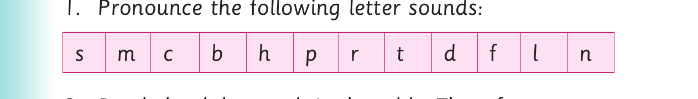
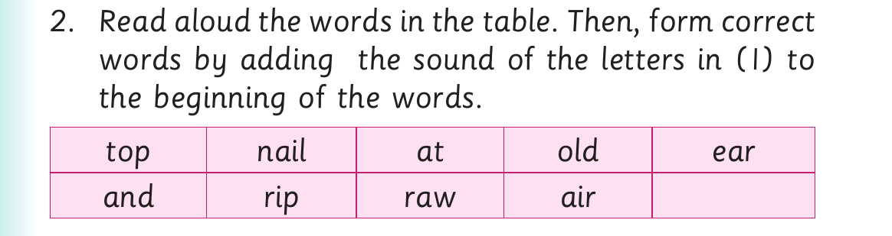

Adding beginning sounds - Activities 2 and 3
Activity 2
1. Pronounce the words and , and end .
2. Add a sound at the beginning of the following words: and , end . Make as many correct words as possible.
Examples:
and- h and end- s end 3. Pronounce the words you have formed in (2). 4. Read the following sentences aloud: (a) A man in the car has a scar. (b) The ox fights with a fox. (c) They went up the Mountain with a cup. (d) The lock is near the clock. (e) A nail is far from the snail.
Activity 3

1. Pronounce the following letter sounds: s m c b h p r t d f l n

2. Read aloud the words in the table. Then, form correct words by adding the sound of the letters in (1) to the beginning of the words. top nail at old ear and rip raw air